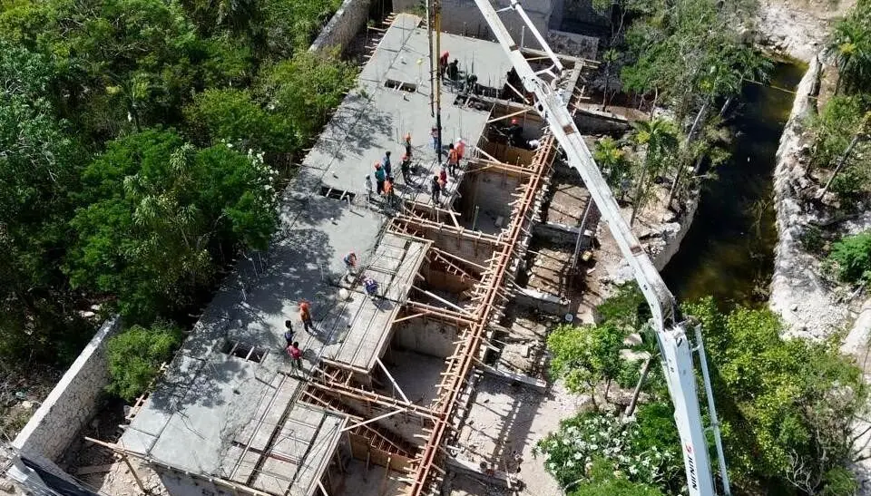

Wastewater Treatment Systems for Villas Without Sewer
In Tulum’s Region 15 and jungle lots, Akumal, Tankah, Puerto Morelos, Bacalar, Holbox and most rural plots there is no sewer to connect to. The old answer — a pit that drains into the rock — pollutes the cenotes, smells in the rainy season and is no longer accepted by permits or by buyers. We install sealed treatment systems sized for the villa, its guests and its rental use, and turn the treated water into irrigation.

A Recrea Construction project
2026 prices installed: certified biodigester with filter and chlorination for a 2–4 bedroom house $120,000–$280,000 MXN; compact aerobic plant for a large villa or rental (4–10 bedrooms) $280,000–$650,000 MXN; system with constructed wetland and irrigation reuse $350,000–$900,000 MXN.
What the Installation Includes
Sizing by Occupancy
Calculated on bedrooms and real rental occupancy, not on the owner alone, so it copes with full houses.
Sealed Tanks
Certified biodigesters or reinforced-concrete tanks, leak-tested and anchored against flotation in high water tables.
Aerobic Treatment
Compact plants with blowers for higher quality effluent and no odour near terraces and pools.
Wetlands & Irrigation
Constructed wetlands and drip irrigation that use treated water in the garden instead of the aquifer.
Separation of Grey Water
Greywater from showers and laundry separated and reused, reducing the load on the system.
Maintenance
Sludge removal schedule, filter cleaning and a simple checklist for your property manager.
Biodigester, aerobic plant or wetland?
Biodigester: anaerobic, no electricity, low maintenance; right for small houses with steady use. Needs a polishing step (filter or wetland) before reuse.
Compact aerobic plant: a blower adds oxygen and the effluent is much cleaner and odour-free; the standard for large villas, rentals and lots near cenotes.
Constructed wetland: plants and gravel polish the treated water naturally and look like a garden; ideal combined with either of the above.
Plan it with the house, not after
The system decides where the drainage runs, how deep the excavation in rock is and where the tanks can be reached by a pump truck. Designed with the architecture, it costs less, sits out of sight and frees space for the garden. We also handle it as a retrofit: replacing a failing pit under an existing villa is one of the most common jobs we do in Tulum and Akumal.
In 2026 a certified biodigester with filter and chlorination costs about $120,000–$280,000 MXN installed for a 2–4 bedroom house; a compact aerobic plant for a large villa or rental $280,000–$650,000 MXN; adding a wetland and irrigation reuse brings it to $350,000–$900,000 MXN.
An absorption pit discharging raw or poorly treated sewage into the rock pollutes the aquifer and is increasingly rejected by permits, developers and buyers. A sealed system with proper treatment is the standard today.
Biodigesters typically need sludge removal every 1–2 years depending on use; aerobic plants need a quick monthly check and periodic sludge removal. We leave a maintenance schedule for your property manager.
Yes, after proper treatment and disinfection, through subsurface or drip irrigation. That is the best use of the water and protects the aquifer.
Get a quote for your villa system
Sized for your bedrooms and rental use, sealed and odour-free. Reply in 2 minutes.